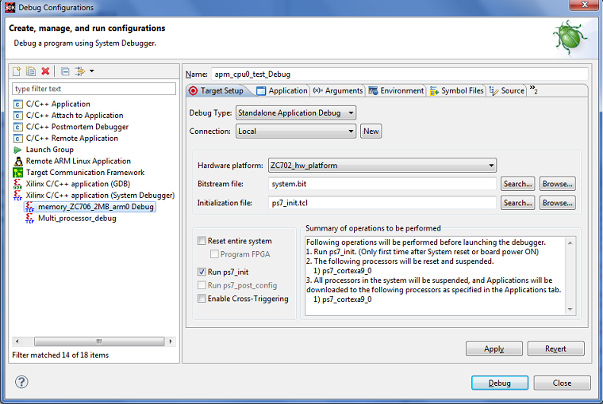
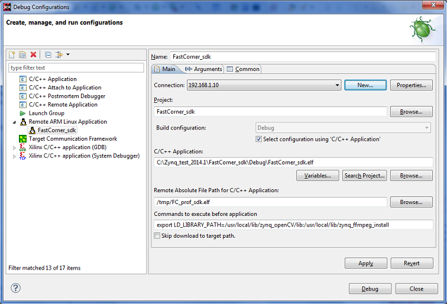
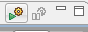
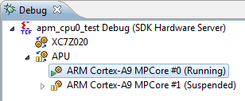

Using the Performance Monitoring Feature
- Create a hardware design with only one AXI Performance Monitor using
the Vivado® Design Suite and export the design to SDK.
- APM slots from 0 to 5 should be connected to HP0, HP1, HP2, HP3, HP4 and
ACP ports in that order.
- Create an application and BSP project for the exported hardware design.
- Program the FPGA with the bitstream of the hardware project using
the Program FPGA dialog box (Xilinx Tools > Program FPGA).
- Select the application
project and select Run > Debug Configurations.
- Double-click Xilinx C/C++ application(System Debugger) to
create a new configuration. Notice all the default values are populated
in the Debug Configuration for the selected application project. The
selected project is also selected for download in the Applications tab.


- Click Debug. The application is downloaded to the target
board and stopped at the main.
- Click the Resume button.
- The application resumes. Traffic is generated on the HP and ACP ports.
- Select Window > Show View > Others to open the Performance
Counters view.
- Select any of the APU contexts in the Debug View
and click the Start button in the Performance Counters view.


- Notice that the Performance Counters view is updated in real-time
for every two seconds with counter values coming from AXI Performance
Monitor (APM) and Zynq-7000 AP SoC Performance Monitor (ZPM) on processing
system.
- You can stop the data collection by clicking the Stop button
at the top right corner of the view. The data collection will also be
stopped when System Debugger is disconnected.
- Once the data collection stops, the raw data of counters will be stored
in the workspace directory as CSV file. You can find the path of the
CSV file in the SDK log.